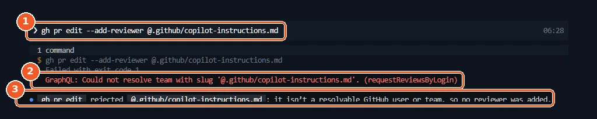
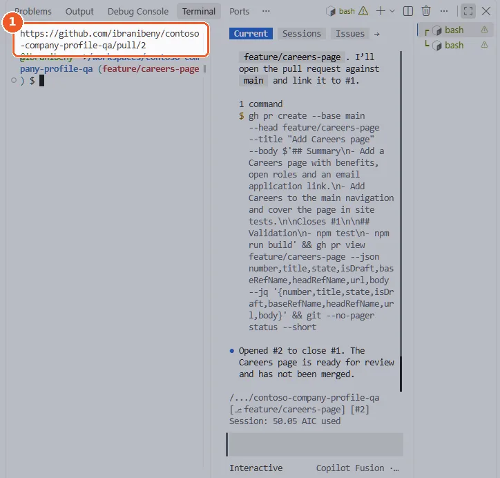
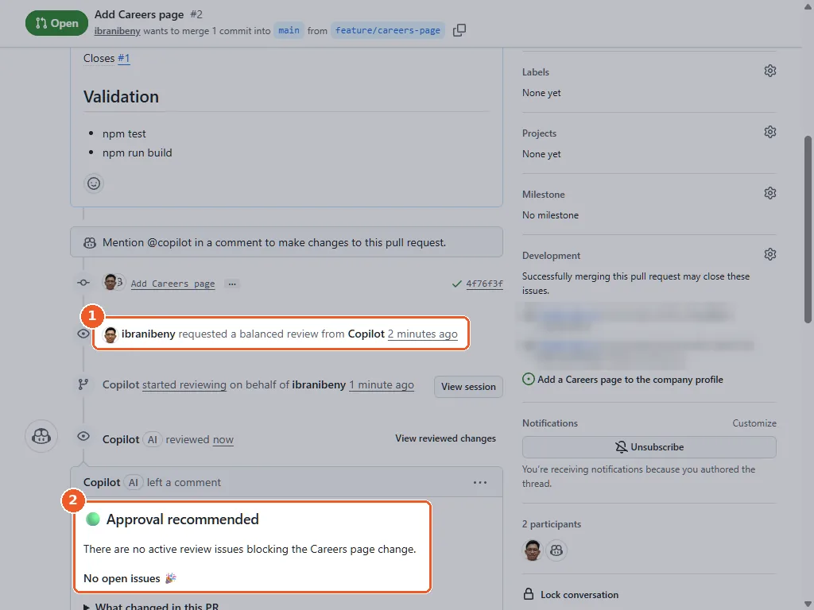
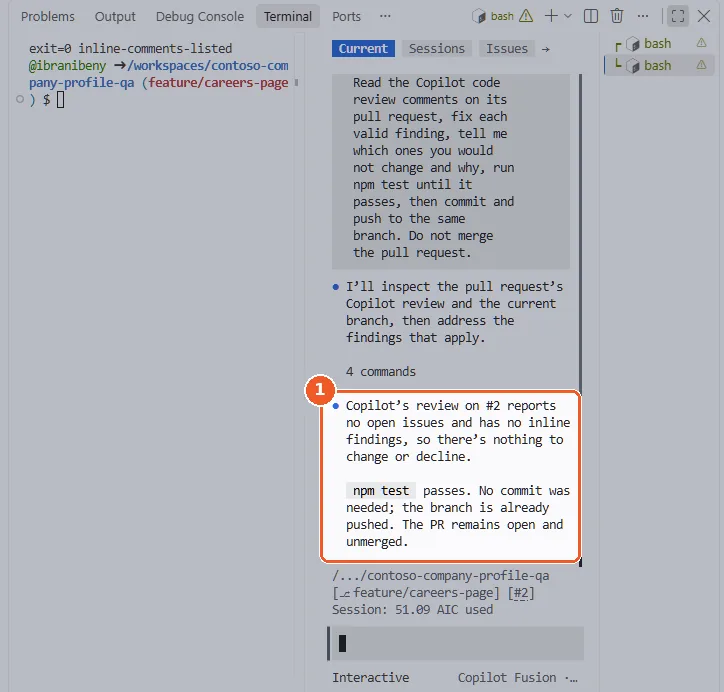
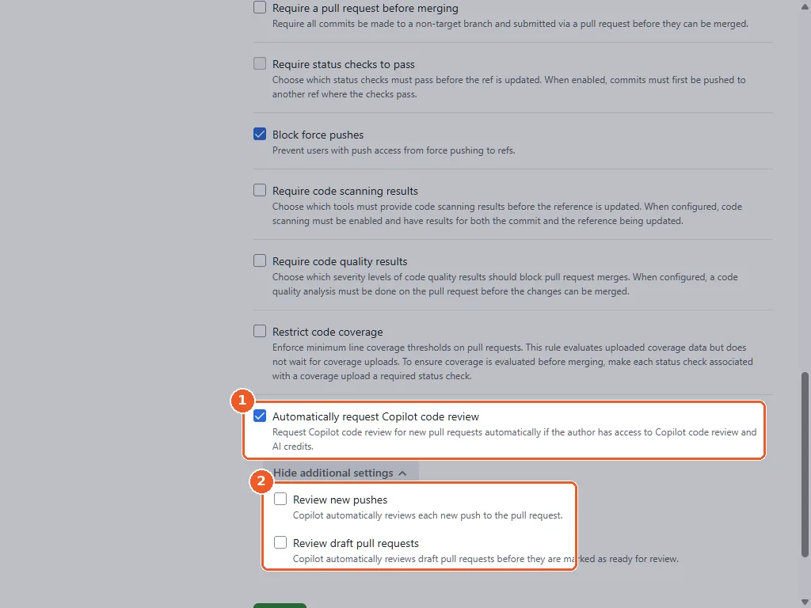
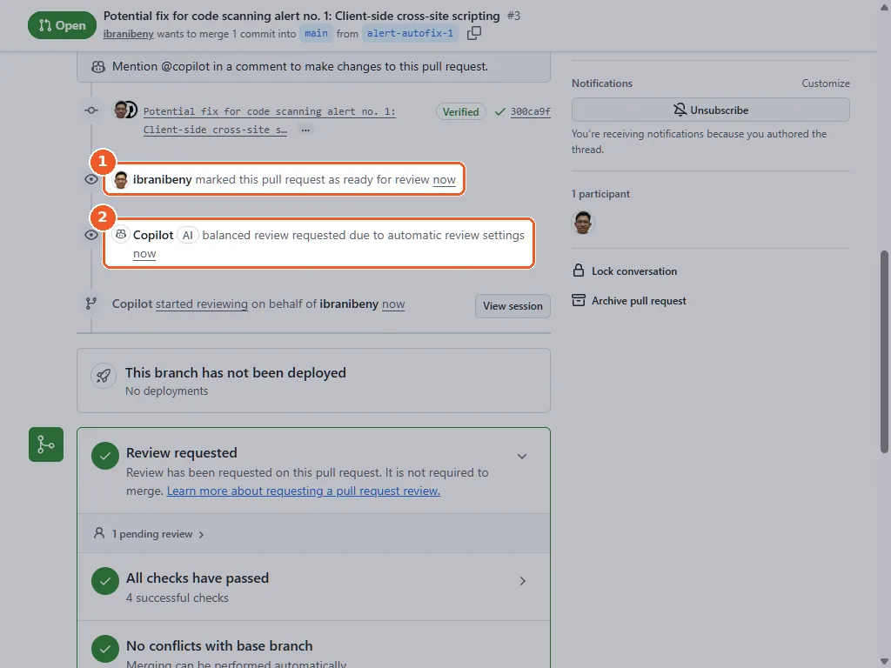
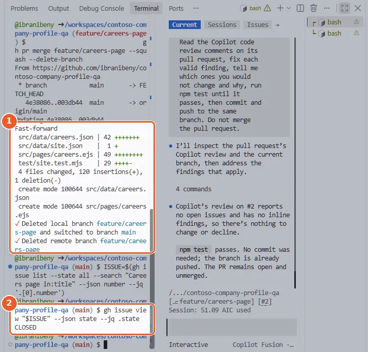
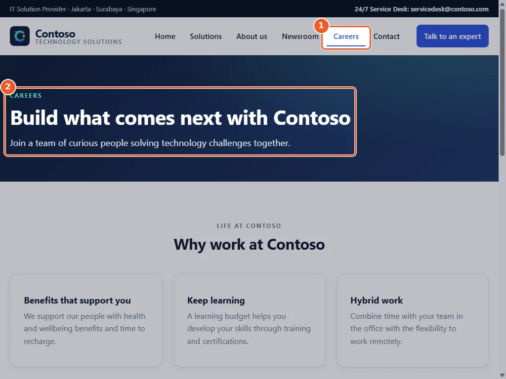

Chapter 4 · about 25 minutes
Review the pull request with Copilot code review
Ask Copilot to review the Careers pull request, act on its comments, make Copilot review automatic for every pull request and ship the page.
Daniel: “Ask Copilot to review it first. Then you review what Copilot found. And make it automatic, I don't want to remember this every time.”
@ starts a file reference, so @copilot turns into @.github/copilot-instructions.md.Request a review from Copilot
On the pull request, open Reviewers and select Copilot. The review usually arrives within a few minutes. Request it while the pull request is still open: a review after the merge cannot change what shipped.
Paste this in the bash terminal, never at the Copilot CLI prompt: there, @ starts a file reference.
gh pr edit feature/careers-page --add-reviewer @copilotSame as choosing Copilot under Reviewers. Needs GitHub CLI 2.88 or later (the codespace in our run had 2.103). Seeing Could not resolve team with slug? See the first figure below.
gh api -X POST "repos/{owner}/{repo}/pulls/$(gh pr view feature/careers-page --json number --jq .number)/copilot-code-review"The same request through the REST API. HTTP 409 means a Copilot review is already pending.


- 1The command was pasted at the Copilot CLI prompt. There, @ starts a file reference, so @copilot was completed to @.github/copilot-instructions.md.
- 2Copilot ran the changed command. GitHub CLI read the file path as a team name, so the review request failed.
- 3Nothing was changed. Run the command in the bash terminal instead, or choose Copilot under Reviewers on the pull request.


- 1gh pr edit --add-reviewer @copilot, run in bash, prints the pull request address.
See Using Copilot code review for the other ways to ask for a review.
Why it matters: Copilot code review reads the diff in the context of the repository and of .github/copilot-instructions.md.

Read Copilot's review
Copilot leaves a summary and inline comments, often with a suggested change you can commit directly. It comments rather than approving, so it never blocks a merge on its own: even a clean review, like the one in our run, ends with Approval recommended and leaves the approval to you. The timeline shows the review effort level (Balanced in our run).
gh pr view feature/careers-page --comments
gh api "repos/{owner}/{repo}/pulls/$(gh pr view feature/careers-page --json number --jq .number)/comments" \
--jq '.[] | "\(.path):\(.line // .original_line) \(.body)"'The summary review, then each inline comment as file:line comment.


- 1The review is requested at the Balanced effort level.
- 2Copilot's verdict: approval recommended, no open issues.
Act on the comments
For each comment, either select Commit suggestion, ask Copilot CLI in the codespace to address it, or resolve it with a reply explaining why not. Then re-request the review.
A clean review with nothing to fix? Run the prompt anyway: Copilot CLI checks the review, says there is nothing to change and leaves the pull request open.
Switch to the branch feature/careers-page. Read the Copilot code review comments on its pull request, fix each valid finding, tell me which ones you would not change and why, run npm test until it passes, then commit and push to the same branch. Do not merge the pull request.gh api -X POST "repos/{owner}/{repo}/pulls/$(gh pr view feature/careers-page --json number --jq .number)/copilot-code-review"After the fixes are pushed, asks Copilot for a fresh review. HTTP 409 means one is already pending.


- 1With a clean review there is nothing to fix: Copilot says so, runs npm test and leaves the pull request open.
Why it matters: You stay accountable for what is merged. Copilot is a fast, consistent reviewer, not the approver of record.
Make Copilot review automatic with a ruleset
- Open Settings → Rulesets → New ruleset → New branch ruleset.
- Name it
main-reviewand set Enforcement status to Active. Under Target branches select Add target → Include default branch. - Keep Restrict deletions and Block force pushes, which are already ticked. Scroll to the last rule, tick Automatically request Copilot code review and select Create. Its two extra options, Review new pushes and Review draft pull requests, can stay unticked.
From now on Copilot reviews each new pull request to main. A draft is reviewed when you mark it Ready for review, as you will see in Chapter 5.
gh api -X POST "repos/{owner}/{repo}/rulesets" --input - <<'EOF'
{
"name": "main-review",
"target": "branch",
"enforcement": "active",
"conditions": { "ref_name": { "include": ["~DEFAULT_BRANCH"], "exclude": [] } },
"rules": [
{ "type": "copilot_code_review",
"parameters": { "review_on_push": false, "review_draft_pull_requests": false } }
]
}
EOFOptional. It changes a repository setting, which the codespace's built-in token cannot do, so run it where you signed in with your own account (how).


- 1Tick Automatically request Copilot code review, the last rule in the list.
- 2Optional extras: review every new push, and review draft pull requests.


- 1The pull request is marked ready for review...
- 2...and the ruleset requests the Copilot review automatically.
Why it matters: Every future pull request to main gets a Copilot review without anyone remembering to ask.
Merge and ship the Careers page
Merge the pull request with the block below, or with Squash and merge on the pull request page. The Careers issue closes automatically, the Pages workflow deploys and the Careers page is live.
gh pr merge feature/careers-page --squash --delete-branch
ISSUE=$(gh issue list --state all --search "Careers page in:title" --json number --jq '.[0].number')
gh issue view "$ISSUE" --json state --jq .state
sleep 10
gh run watch "$(gh run list --workflow deploy-pages.yml --limit 1 --json databaseId --jq '.[0].databaseId')"Expected: CLOSED for the Careers issue, then the deployment that ships the Careers page. gh also switches you to an up-to-date main. If the deployment finished first, the last line says the run has already completed: that is fine.


- 1Squash merge: gh deletes the branch and switches you back to an up-to-date main.
- 2The Careers issue is now CLOSED.


- 1Careers in the navigation of the live site.
- 2The page Fusion built, deployed by GitHub Actions after the merge.
Checkpoint
Lina shares the Careers page with her recruiters. Raka sends one line: “My office. Security.”
Tested end to end on 12 Nov 2026: see the test runReport a problem with this page